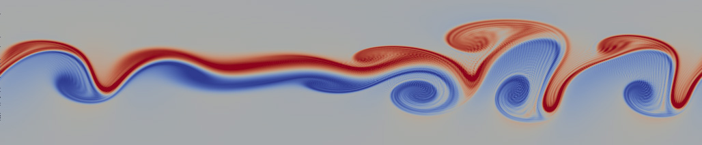

Toggle navigation
Home
Publications

Research areas: fluid dynamics, geophysical flows, geometric mechanics, turbulence.
Qingshan Chen
qsc at clemson dot edu
School of Math and Stats
Clemson University
Clemson, South Carolina
USA
Google Scholar
Publications
Papers
Conservative numerical schemes with optimal dispersive wave relations -- Part II. Numerical evaluations,
J. Sci. Comput.,
Q. Chen, L. Ju, and R. Temam (2022).
Conservative numerical schemes with optimal dispersive wave relations: Part I. Derivation and analysis,
Numer.~Math.,
Q. Chen, L. Ju, and R. Temam (2021).
An Evaluation of the Ocean and Sea Ice Climate of E3SM Using MPAS and Interannual CORE‐II Forcing,
J Adv Model Earth Syst,
MR Petersen, XS Asay-Davis, et al (2019).
On the well-posedness of the inviscid multi-layer quasi-geostrophic equations,
Discr Cont Dyn Syst - A,
Q. Chen (2019).
The Barotropic Quasi-Geostrophic Equation under a Free Surface,
SIAM J. Math. Anal.,
Q. Chen (2019).
Conservative finite-volume schemes for the quasi-geostrophic equation on coastal-conforming unstructured primal-dual meshes,
QJR Meteorol Soc,
Q.Chen, L. Ju (2018).
The Multilevel Monte Carlo Method for Simulations of Turbulent Flows,
Mon Weather Rev,
Q. Chen, M. Ju(2018).
Error Analysis of Staggered Finite Difference Finite Volume Schemes on Unstructured Meshes,
Numer. Methods Partial Differ. Equ.,
Q. Chen (2017).
Error Analysis of Staggered Finite Difference Finite Volume Schemes on Unstructured Meshes,
Numer. Methods Partial Differ. Equ.,
Q. Chen (2017).
Stable and Convergent Approximation of Two-Dimensional Vector Fields on Unstructured Meshes,
J. Comput. Appl. Math.,
Q. Chen (2016).
Extending a Potential Vorticity Transport Eddy Closure to Include a Spatially-Varying Coefficient,
Comput. Math. Appl.,
Q. Chen, T. Ringler, P. Gent (2016).
On Staggering Techniques and the Non-Staggered Z-grid Scheme,
Numer. Math. ,
Q. Chen (2016).
Prognostic Residual Mean Flow in an Ocean General Circulation Model and its Relation to Prognostic Eulerian Mean Flow,
Journal of physical oceanography,
JA Saenz, Q. Chen, T. Ringler (2015).
Goal-Oriented a Posteriori Error Estimation for Finite Volume Methods,
J. Comput. Appl. Math.,
Q. Chen, M. Gunzburger (2014).
Well-Posedness Results for a Nonlinear Stokes Problem Arising in Glaciology,
SIAM J. Math. Anal.,
Q. Chen, M. Gunzburger, M. Perego (2013).
A Co-Volume Scheme for the Rotating Shallow Water Equations on Conforming Non-Orthogonal Grids,
J. Comput. Phys.,
Q. Chen, T. Ringler, M. Gunzburger (2013).
A Scale-Aware Anticipated Potential Vorticity Method: On Variable-Resolution Meshes,
Mon. Weather Rev.,
Q. Chen, M. Gunzburger, T. Ringler (2012).
Numerical Approximation of the Inviscid 3D Primitive Equations in a Limited Domain,
Esaim Math. Model. Numer. Anal.,
Q. Chen, MC Shiue, R. Temam, J. Tribbia (2012).
A Scale-Invariant Formulation of the Anticipated Potential Vorticity Method,
Mon. Weather Rev.,
Q. Chen, M. Gunzburger, T. Ringler (2011).
Numerical Resolution Near t = 0 of Nonlinear Evolution Equations in the Presence of Corner Singularities in Space Dimension 1,
Commun. Comput. Phys.,
Q. Chen, Z. Qin, R. Temam (2011).
Treatment of Incompatible Initial and Boundary Data for Parabolic Equations in Higher Dimensions,
Math. Comput.,
Q. Chen, Z. Qin, R. Temam (2011).
Partial and Spectral-Viscosity Models for Geophysical Flows,
Chinese Annals of Mathematics - Series B,
Q. Chen, M. Gunzburger, X. Wang (2010).
The Barotropic Mode for the Primitive Equations,
J. Sci. Comput.,
Q. Chen, MC Shiue, R. Temam (2010).
Simulations of the 2.5D Inviscid Primitive Equations in a Limited Domain,
J. Comput. Phys.,
Q. Chen, R. Temam, J. Tribbia (2008).
A 2.5D Model for the Equations of the Ocean and the Atmosphere,
Anal. Appl.,
Q. Chen, J. Laminie, A. Rousseau, R. Temam, J. Tribbia (2007).
Plain Academic